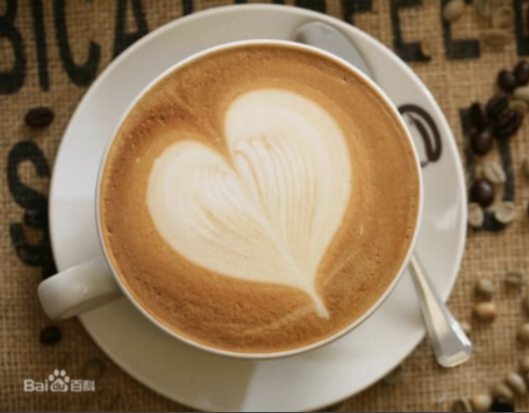
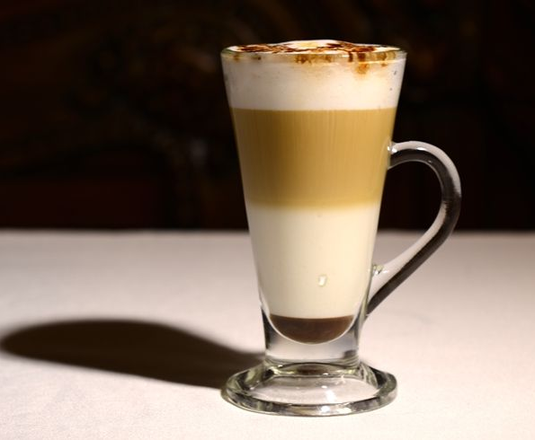
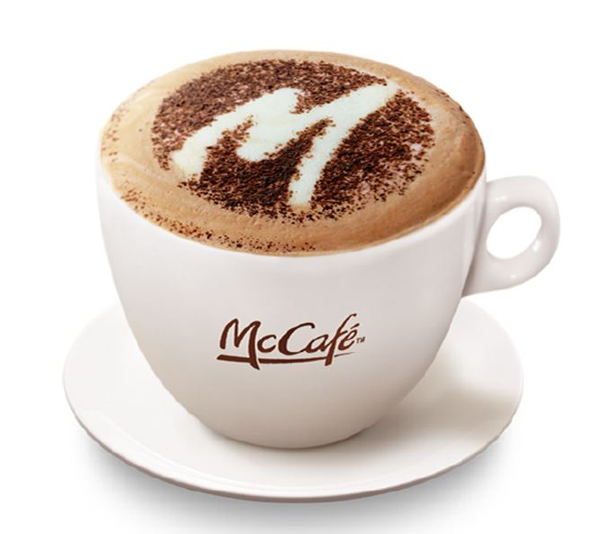
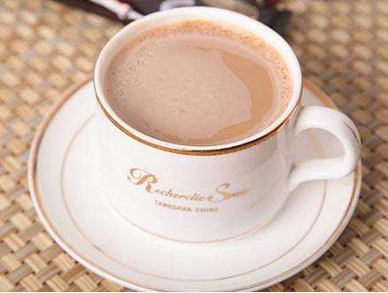
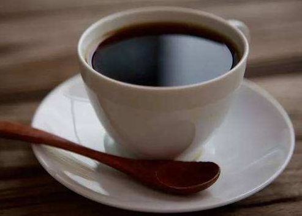
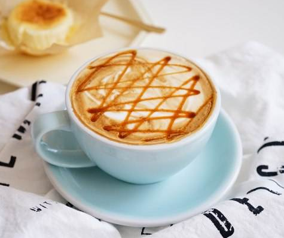

|
|
 |
|
| 种类 |
价格 |
| 拿铁 |
20$ |
| 卡布奇诺 |
30$ |
| 奥瑞白 |
10$ |
| 美式咖啡 |
10$ |
| 焦糖玛奇朵 |
25$ |
|
|
|
|
|
| |
拿铁
|
|  |
| “拿铁”是意大利文"atte"的音译，拿铁咖啡拿铁咖啡(6张)“拿铁”是意大利文"atte"的音译，拿铁咖啡拿铁咖啡(6张)
拿铁咖啡(CoffeeLatte)是花式咖啡的一种,是咖啡与牛奶交融
的极至之作。意式拿铁咖啡为纯牛奶加咖啡，美式拿铁则将
部分牛奶替换成奶泡，本地的拿铁多为此种。那句著名
的“我不在咖啡馆，就在去咖啡馆的路上”是- -位音乐家在维
也纳说出来的。维也纳的空气里，永远都飘荡着音乐和拿铁
(Latte)咖啡的味道。
|
|
卡布奇诺
|
|  |
| 卡布奇诺是一种加入以同量的意大利特
浓咖啡和蒸汽泡沫牛奶相混合的意大利咖啡。此时咖啡的颜色，
就像卡布奇诺教会的修士在深褐色的外衣上覆上一条头巾一样，咖
啡因此得名。传统的卡布奇诺咖啡是三分之一浓缩咖啡，三分之一
蒸汽牛奶和三分之一泡沫牛奶，并在上面撒上小颗粒的肉桂粉末。
|
|
奥瑞白
|
|  |
| 奥瑞白咖啡并不是指咖啡的颜色是白色的，而
是采用特等Liberia（利比里亚） 、Arabica（阿拉比卡）和 Robu
ta（罗布斯塔）咖啡豆及特级的脱脂奶精原料，经中轻度低温烘焙及
特殊工艺加工后大量去除咖啡碱，去除高温碳烤所产生的焦苦与酸涩
味，将咖啡的苦酸味、咖啡因含量降到最低，甘醇芳香不伤肠胃，保
留咖啡原有的色泽和香味，口感爽滑，纯正，颜色比普通奶咖更清淡
柔和，淡淡的奶金黄色，故得名为白咖啡。
|
|
美式咖啡
|
|  |
| 美式咖啡”
（英文：Americano，意大利语：Caffè Americano）咖啡
的一种，是最普通的咖啡。是使用滴滤式咖啡壶所制作出的黑
咖啡，又或者是意式浓缩中加入大量的水制成。
美式咖啡口味比较淡。因为一般的萃取时间相对较长（大
概四五分钟），所以咖啡因含量较高。
|
|
焦糖玛奇朵
|
|  |
| 焦糖玛奇朵（英文：Caramel Macchia
to）是在香浓热牛奶上加入浓缩咖啡、香草，再淋上纯正焦糖而
制成的饮品，融合三种不同口味。Macchiato意大利文，意思是
“烙印”和“印染”，中文音译“玛奇朵”。“Caramel”意思是焦糖。
焦糖玛琪朵，寓意“甜蜜的印记”。
|
|
|